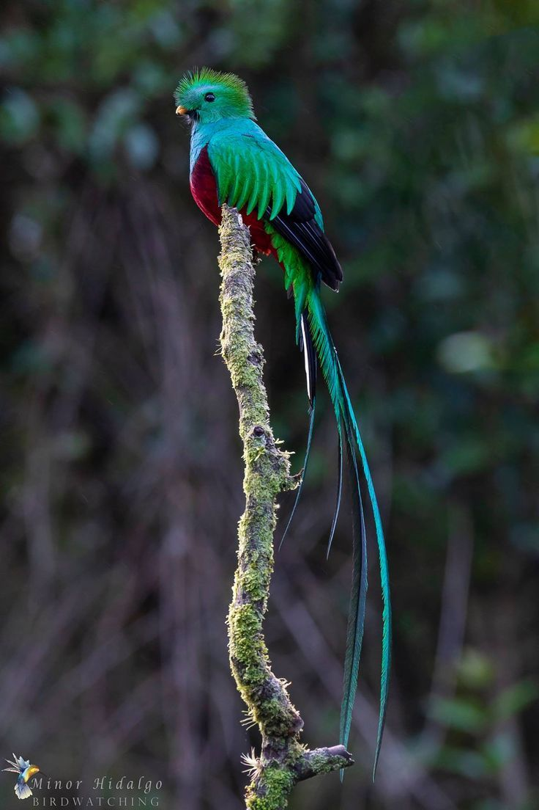

Quetzal
Generalità
Il quetzal è una delle specie di animali più particolari al mondo.
E’ onnivoro, infatti si nutre di rane, lucertole, invertebrati e vegetali e fa parte della famiglia Trogonidae, diffuso soprattutto in America Centrale.
Le femmine si riconoscono per il piumaggio smorto, con piume verde pallido o marrone, senza le lunghe copritrici superiori, i maschi, al contrario, si riconoscono dal piumaggio verde rosa con il becco giallo e date le copritrici della coda molto lunghe, riesce a raggiungere i 105 cm di lunghezza; mediamente pesano 200g.
Questo animale lo possiamo trovare nelle foreste montane di Messico, Guatemala, Honduras, El Salvador, Nicaragua, Costa Rica e Panama.
Durante la covata, maschio e femmina collaborano nella cova delle due uova celesti per circa venti giorni.
I piccoli rimangono nel nido per una trentina di giorni.
Quetzal

Curiosità
Avete presente la bandiera presidenziale del Guatemala?
Ecco…li possiamo notare un Quetzal stilizzato.
Ma perché è stato scelto questo uccello?
La leggenda che si cela dietro questo uccello narra che, fin dalla comparsa dell’uomo sulla terra, abbia resistito ai numerosi tentativi di cattura e che abbia trovato una strategia per vivere libero.
Il Quetzal, infatti, quando viene messo in una gabbia, smette subito di nutrirsi e di bere, facendolo avvicinare sempre di più al suicidio.
Questo atteggiamento ha garantito alla sua specie delle lunghissime ere di piena libertà.
Il metodo di resistenza utilizzato è un caso unico nel mondo animale facendolo così diventare oggetto di stima e simpatia da parte di chiunque metta la libertà al primo posto.
Il quetzal splendente rappresenta, dunque, la vera essenza della libertà!